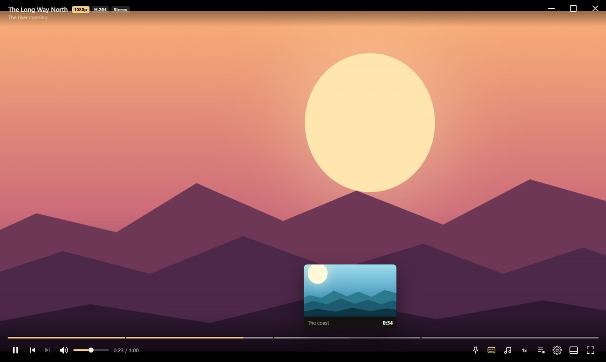
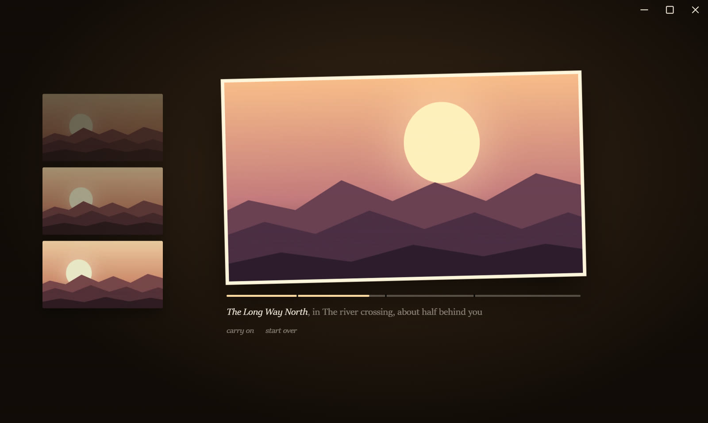
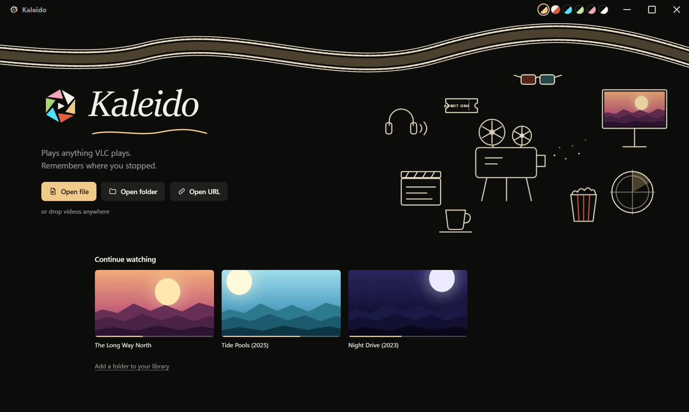

What did they say?
Press W. It jumps back ten seconds with subtitles on, then switches them off again once it catches up.
Plays anything VLC plays.
Remembers where you stopped.
Warms the room when you pause.
Free and open source. Windows 10 and 11, 64-bit. Portable version

Ordinary controls that disappear while you watch. VLC underneath, so MKV, AVI, HEVC, AC3, DTS and the rest just play.
Every other player freezes a frame and puts a play button on top of it. Kaleido holds the picture like a photograph, crops the black bars away, and lays the last few moments you saw beside it. Click one to go back there.

VLC, mpv, PotPlayer, IINA and MPC don't do these.
Press W. It jumps back ten seconds with subtitles on, then switches them off again once it catches up.
Press / and type a word. Every line where somebody says it, with a time beside it. Click to go there.
Pick Japanese audio and English subtitles once. Every file in that folder starts the same way.
Lectures and recordings lose their dead air. Long quiet stretches are jumped over as they come.
Loop a part with X, press C. It becomes a frame accurate mp4. No loop? It keeps the last 30 seconds.
Walk away and the film waits. When you come back, it tells you where you are.
Pick one. This page changes with it, just like the app.

Version 0.1.0 for Windows 10 and 11, 64-bit.
Both are about 180 MB because VLC and FFmpeg come inside, so nothing else needs installing. The installer is not code signed yet, so Windows may show a SmartScreen notice: choose More info, then Run anyway.